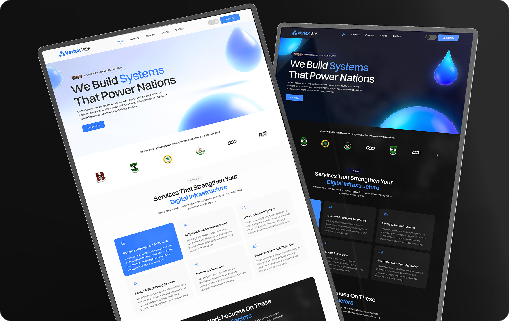
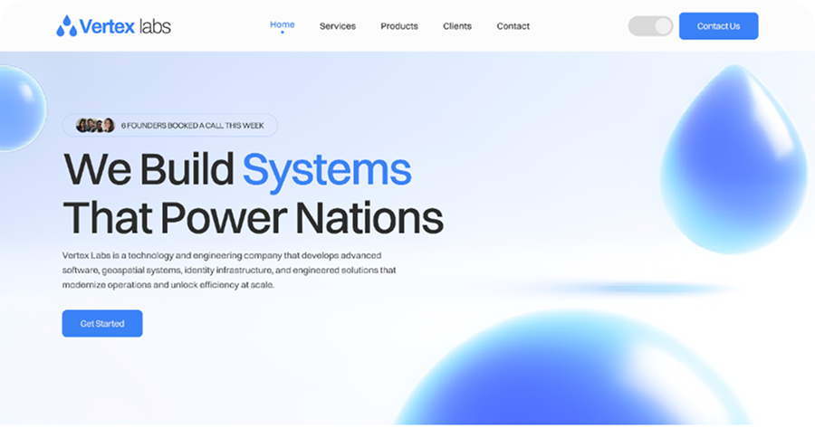
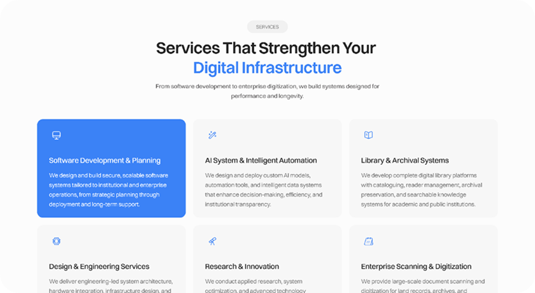
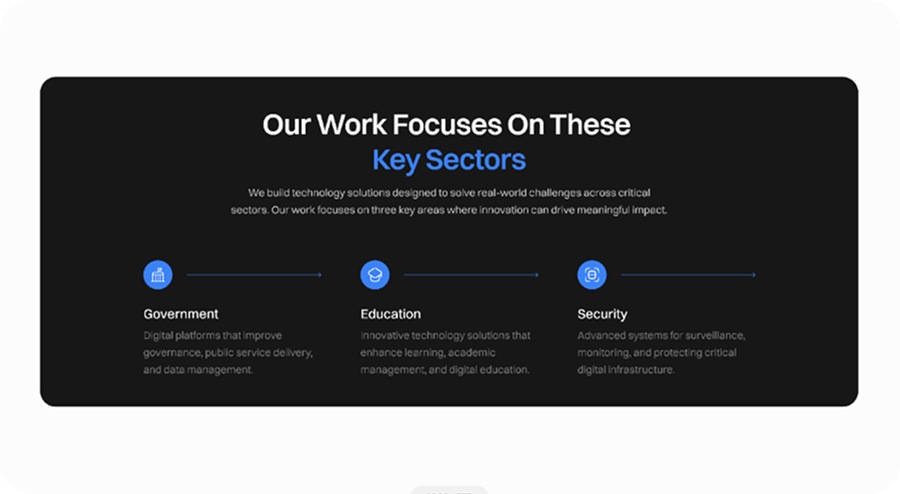
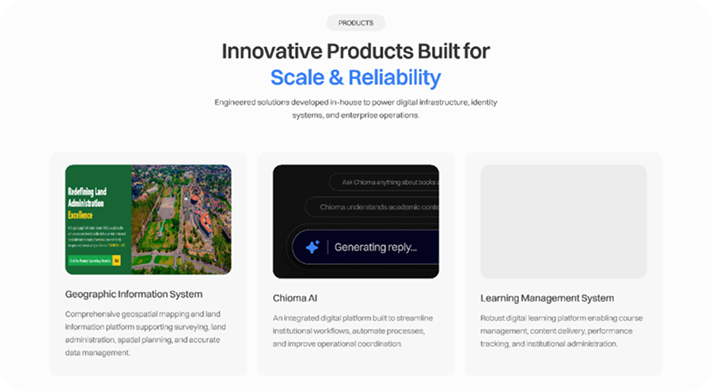
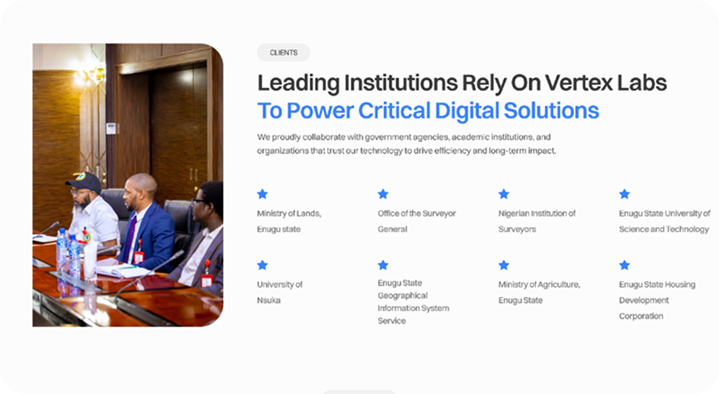
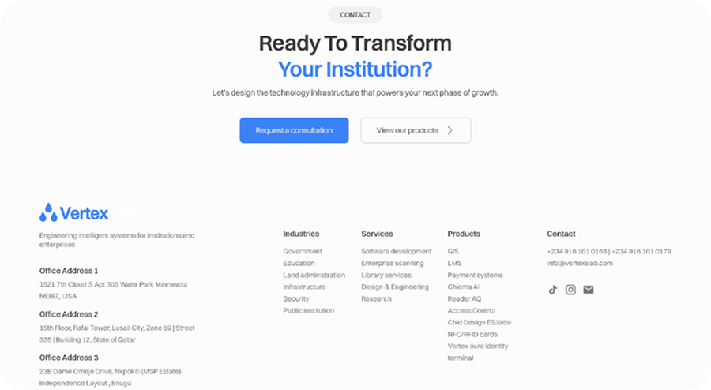
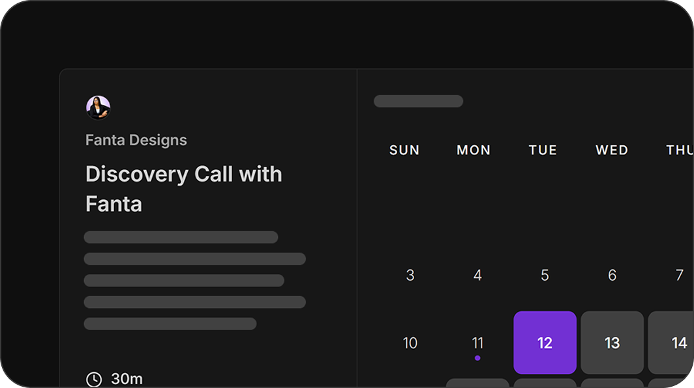

A brand-led website redesign that turned a non-converting page into an investor magnet — attracting partners from Qatar for Vertex Labs, a technology and engineering company building digital infrastructure for governments, universities and institutions across Nigeria and Qatar.

Vertex Labs builds advanced technology infrastructure for governments, universities, and enterprises — geospatial systems, AI platforms, digital libraries, identity infrastructure. But their website told none of that story. It failed to reflect the scale, ambition, or brand identity of the company behind it. The water drop motif central to Vertex's brand, rooted in the idea that water, like electricity, flows to power everything it touches, was entirely absent. The result was a site that looked generic and converted no one.
The redesigned website attracted investor interest from Qatar, giving Vertex Labs a credible digital front door that finally matched the scale of what they actually build. The site now serves government agencies, universities, and enterprise clients across Nigeria, the US, and Qatar.
Sections designed

01
Bold headline, trusted institution logos and a clear CTA above the fold.

02
6 service cards covering the full scope of Vertex Labs' offerings.

03
Government, Education and Security — positioned for institutional clients.

04
GIS, Chioma AI and LMS — positioning Vertex as a product company.

05
Institutional trust signals from government agencies to universities across Nigeria.

06
A consultation-first endpoint and complete directory — closing the site with clarity and conversion.
Have a project in mind or just want to say hello? My inbox is always open. I'll get back to you as soon as possible.
Usually responds within 24 hours
